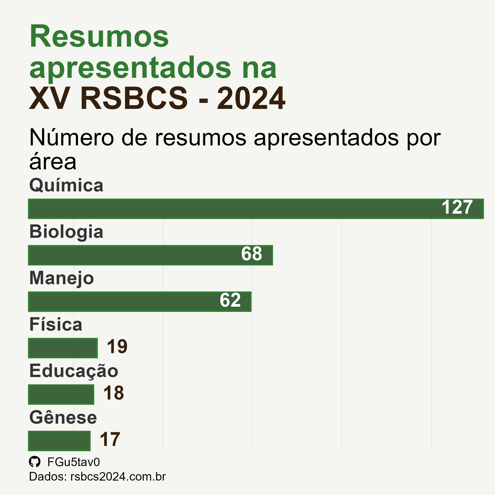

Código
library(tidyverse)
library(pdftools)
library(ggtext)
library(gt)
library(patchwork)Para mais informações acesse o site: https://www.rsbcs2024.com.br/
Para essa análise vou utilizar os seguintes pacotes do R
doc <- "anais-2024.pdf"
texto <- pdftools::pdf_text(pdf = doc)
df <- texto[7:18] |>
str_split("(?<=\\d)\\n") |>
unlist() |>
enframe(name = NULL, value = "linha") |>
filter(linha != "")
df2 <- df[-seq(1,18),]
df2 <- df2[-seq(321,320),]
base <- df2 |> separate(col = linha,
into = c("trabalho","pag"),
sep = "\\.{2,}\\s*")
writexl::write_xlsx(base, path = "anais.xlsx")df <- readxl::read_excel("anais.xlsx") |>
mutate(pag = as.numeric(pag))
area <- df |> filter(str_detect(trabalho, "ÁREA"))
df_filter <- anti_join(df, area, by = "pag")
areas <-
data.frame(
code = c("Biologia","Educação","Manejo",
"Gênese","Física","Química"),
nome = c(
"BIOLOGIA DO SOLO, CICLOS BIOGEOQUÍMICOS, \nBIOINSUMOS, QUALIDADE E SAÚDE DO SOLO",
"EDUCAÇÃO, SOCIOLOGIA, PÚBLICA E \nSEGURANÇA ALIMENTAR",
"MANEJO E CONSERVAÇÃO DO SOLO E DA ÁGUA, \nPLANEJAMENTO DO USO DA TERRA, HIDROLOGIA",
"MINERALOGIA, GÊNESE, MORFOLOGIA, \nLEVANTAMENTO, CLASSIFICAÇÃO DO SOLO, \nPEDOMETRIA E PALEOPEDOLOGIA",
"PEDOFUNÇÕES, PROPRIEDADES E \nPROCESSOS FÍSICOS DO SOLO",
"QUÍMICA, FERTILIDADE, NUTRIÇÃO DE PLANTAS, \n CORRETIVOS E FERTILIZANTES"
)
)
base <- df_filter |>
mutate(area = case_when(
pag < 103 ~ "Biologia",
between(x = pag, left = 103, 122) ~ "Educação",
between(x = pag, left = 123, 186) ~ "Manejo",
between(x = pag, left = 187, 204) ~ "Gênese",
between(x = pag, left = 205, 224) ~ "Física",
pag > 224 ~ "Química",
.default = "none"
),
area = str_to_title(area))| Divisão das áreas de pesquisa na XV RSBCS | |
| Reunião Sul Brasileira de Ciência do Solo | |
| Código | Área |
|---|---|
| Biologia | BIOLOGIA DO SOLO, CICLOS BIOGEOQUÍMICOS, BIOINSUMOS, QUALIDADE E SAÚDE DO SOLO |
| Educação | EDUCAÇÃO, SOCIOLOGIA, PÚBLICA E SEGURANÇA ALIMENTAR |
| Manejo | MANEJO E CONSERVAÇÃO DO SOLO E DA ÁGUA, PLANEJAMENTO DO USO DA TERRA, HIDROLOGIA |
| Gênese | MINERALOGIA, GÊNESE, MORFOLOGIA, LEVANTAMENTO, CLASSIFICAÇÃO DO SOLO, PEDOMETRIA E PALEOPEDOLOGIA |
| Física | PEDOFUNÇÕES, PROPRIEDADES E PROCESSOS FÍSICOS DO SOLO |
| Química | QUÍMICA, FERTILIDADE, NUTRIÇÃO DE PLANTAS, CORRETIVOS E FERTILIZANTES |
| Source: www.rsbcs2024.com.br | |
github_icon <- ""
git_gf <- "FGu5tav0"
social_caption <- glue::glue(
"<span style='font-family:\"Font Awesome 6 Brands\";'>{github_icon};</span>
<span style='color: #000000'>{git_gf}</span><br> Dados: rsbcs2024.com.br"
)
p1 <- base |>
group_by(area) |>
count() |>
ggplot(aes(x = fct_reorder(area, n), y = n)) +
geom_col(
fill = "#3d643b", col = "#317a31",
width = .4
) +
scale_color_identity() +
geom_text(mapping=aes(y=0, x=area, label=area),
color="gray20", vjust=-1.3, hjust=0, fontface = "bold") +
ggtext::geom_textbox(
aes(
label = n,
hjust = case_when(
n < 20 ~ 0,
TRUE ~ 1
),
halign = case_when(
n < 20 ~ 0,
TRUE ~ 1
),
colour = case_when(
n > 50 ~ "#FFFFFF",
TRUE ~ "#36200d"
)
),
size = 4,
fill = NA,
box.colour = NA,
family = "Cabin",
fontface = "bold"
) +
coord_flip(expand = F, clip = "off") +
labs(
title = ' <span style = "color:#317a31"> Resumos apresentados na</span><span style = "color:#36200d"> XV RSBCS - 2024</span>',
subtitle = "Número de resumos apresentados por área",
y = "nº de trabalhos apresentados",
x = element_blank(),
caption = social_caption
) +
theme_minimal(14) +
theme(
plot.background = element_rect(fill = "#f5f5f2",
color = "#f5f5f2"),
legend.position = "none",
plot.title = ggtext::element_textbox_simple(
size = rel(1.3),
face = "bold",
family = "Enriqueta",
lineheight = 1,
margin = margin(0.5, 7, 1, 0, "lines"),
hjust = 0, halign = 0
),
plot.subtitle = ggtext::element_textbox_simple(
family = "Cabin", size = rel(1),
lineheight = 1,
margin = margin(0, 0, 1.5, 0, "lines")),
plot.caption = ggtext::element_textbox_simple(
size = rel(.5)),
panel.grid.major = element_blank(),
axis.title.x = element_blank(),
axis.text= element_blank(),
axis.ticks = element_blank()
)
# ggsave(plot = p1,filename = "resumos.jpeg",
# width = 4, height = 4, dpi = 600)
Os códigos apresentados foram produzidos sem critérios de qualidade. Melhorias ainda podem ser feitas.